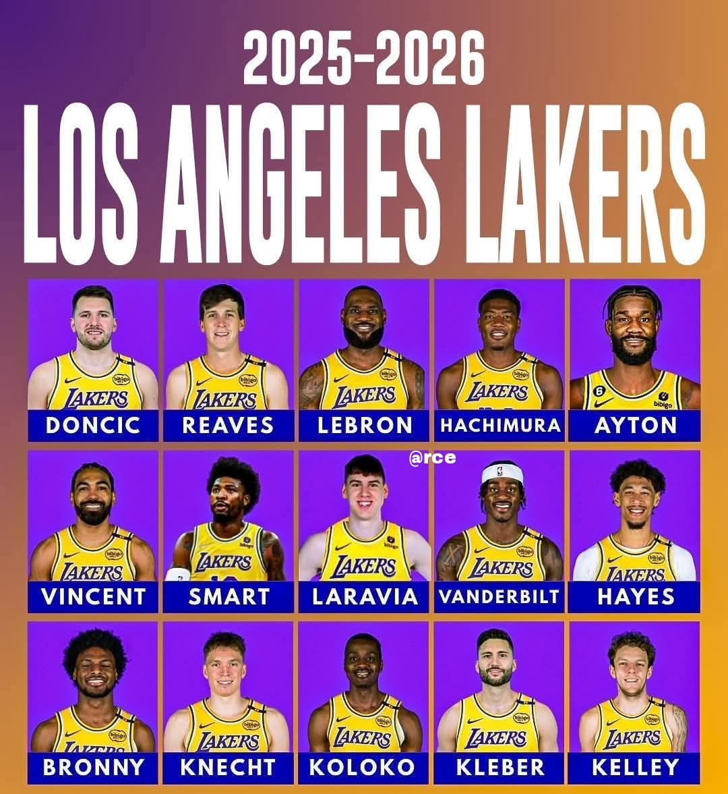

Станом на 27 березня 2026 року «Лос-Анджелес Лейкерс» посідають 1-ше місце в Тихоокеанському дивізіоні та 3-тє місце в Західній конференції з показником 47 перемог та 26 поразок. Команда під керівництвом головного тренера Джей Джея Редіка демонструє чудову форму, вигравши 10 з останніх 11 матчів, включаючи нещодавню перемогу над «Індіана Пейсерз» (137:130).

Найкращим гравцем «Лос-Анджелес Лейкерс» у сезоні 2025/2026 є Лука Дончич , який демонструє феноменальну результативність, включаючи історичні матчі з 60+ очками та рекордами за триочковими, ставши ключовою зіркою команди